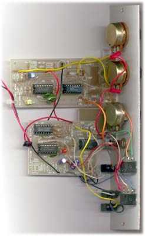
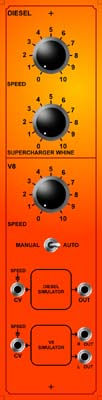

|

 This module features two engine simulators. Neither was designed with synthesizers in mind, but neither was particularly difficult to convert, and as I had them lying around, why not? The Diesel Simulator was based on a popular design, variations of which are used in model railroads frequently. It has been published by at least four magazines, each with it's own variation on the design. It produces a reasonable simulation of a diesel engine. It could be considered a dedicated version of the "complex sound generator" synthesizer module that I have seen detailed elsewhere. My original prototype was built twenty years ago, before I actually had my first synth. The circuit board the one in this module is base on was published in 1990 as part of a model railway book. Schematic. The V-8 simulator is a much simpler circuit, generating just the timing pulses for left and right exhausts. In its original form, it was meant to drive a single speaker, its pitch related to the speed of a radio controlled car. A little rewiring generated the second pulse train. It lacks any of the resonances etc. required to produce an accurate engine sound, but it's not a bad starting place. The prototype circuit for this was developed back around 1989 or 1990, though as of yet has not been published. As both use the 4046 CMOS VCO, they are both voltage controlled, though neither makes any attempt to track keyboard pitches.
Article, art & design copyright 2001 by Ken Stone
|
{kind=link}